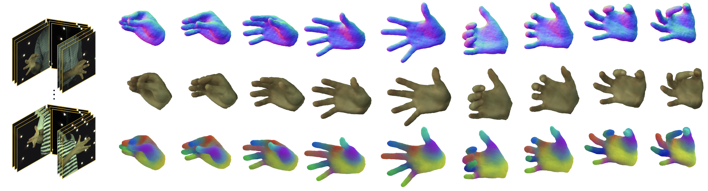
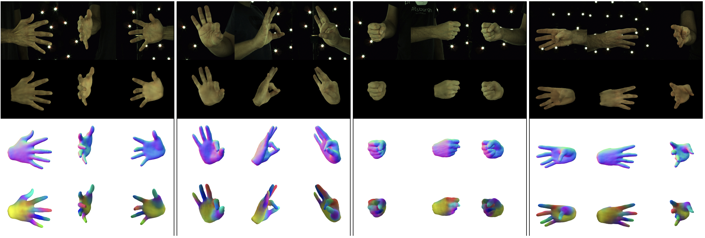
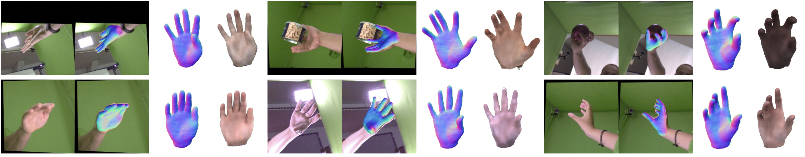

Enric Corona, Tomas Hodan, Minh Vo, Francesc Moreno-Noguer,
Chris Sweeney, Richard Newcombe, Lingni Ma
description
Paper
description
Suppl.
play_circle_filled
Video

This paper proposes a do-it-all neural model of human hands, named LISA. The model can capture accurate hand shape and appearance, generalize to arbitrary hand subjects, provide dense surface correspondences, be reconstructed from images in the wild, and can be easily animated. We train LISA by minimizing the shape and appearance losses on a large set of multi-view RGB image sequences annotated with coarse 3D poses of the hand skeleton. For a 3D point in the local hand coordinates, our model predicts the color and the signed distance with respect to each hand bone independently, and then combines the per bone predictions using the predicted skinning weights. The shape, color, and pose representations are disentangled by design, enabling fine control of the selected hand parameters. We experimentally demonstrate that LISA can accurately reconstruct a dynamic hand from monocular or multi-view sequences, achieving a noticeably higher quality of reconstructed hand shapes compared to baseline approaches.
LISA is trained by minimizing shape and appearance losses from a dataset of multi-view RGB image sequences. The sequences are assumed annotated with coarse 3D poses of the hand skeleton that are refined during training. The training sequences show hands of multiple people and are used to learn disentangled representations of pose, shape and color.
LISA learns to approximate the hand by a collection of rigid parts defined by the hand bones. Each 3D query point is transformed to the local coordinate systems of the bones associated with independent neural networks, where two independent MLPs predict the signed distance to the hand surface and the color. The per-bone predictions are finally combined using skinning weights predicted by an additional network.
At inference, we can sample shape and color representations and generate hands with different hand colors and shapes, while controlling their pose. We also use this model for the task of 3D reconstruction given input 3D point-clouds or single and multi-view images.
Even though LISA is first trained as a generative model that can represent and generate different hand poses, shapes and colors in both 2D and 3D domains, we show that it can be used straight away for the tasks of 3D reconstruction of hands. We show its flexibility by reconstructing hands from input point clouds, single images or multi-view images. In all tasks it outperforms previous works and show that it can generalize to new hand poses and shapes.
We first test LISA in the task of hand reconstruction from point clouds, where we follow a very similar pipeline as the one used to learn the model, by minimizing SDF, eikonal and regularization losses. The input point clouds might be noisy and have missing parts, and our goal is to obtain faithful registrations of the hands presented. We compare against MANO, the main parametric hand model which is widely used for reconstruction of hands. We also compare against other implicit representations that we trained specifically for hands in the same dataset than LISA, including VolSDF, NASA and NARF. The results show that LISA-im consistently outperforms the other methods when only images are used for training (LISA-im). Adding a geometric prior (LISA-full) yields a significant boost in performance and provides more compelling visual results. Quantitative results are also available in the paper.
When tackling single or multi-view images as input, we fit LISA by minimizing the projection error and other regularization losses. Assuming we have rough 2D hand joint estimations we guide the optimization to have a plausible hand skeleton and color. The paper contains quantitative evaluations where we evaluate the difference between one and multiple views, and show that LISA outperforms previous approaches.
We here show single-view 3D reconstruction results on the InterHand2.6M Dataset. The first two rows show ground-truth images and rendered reconstructions, while we show the geometry and skinning weights in the third and fourth rows. While the process only takes one image (top-left for each scene), all renders look realistic and generate plausible hand poses.
We next include a few examples on the FreiHand Dataset, showing the input image, the reconstructed hand projected on the image, and reconstructed geometry and texture in a canonical space.

@inproceedings{corona2022lisa,
Author = {Corona, Enric and Hodan, Tomas and Vo, Minh and Moreno-Noguer, Francesc and Sweeney, Chris and Newcombe, Richard and Ma, Lingni}
Title = {LISA: Learning Implicit Shape and Appearance of Hands},
Year = {2022},
booktitle = {CVPR},
}
@inproceedings{corona2022lisa,
Author = {Corona, Enric and Hodan, Tomas and Vo, Minh and Moreno-Noguer, Francesc and Sweeney, Chris and Newcombe, Richard and Ma, Lingni}
Title = {LISA: Learning Implicit Shape and Appearance of Hands},
Year = {2022},
booktitle = {CVPR},
}